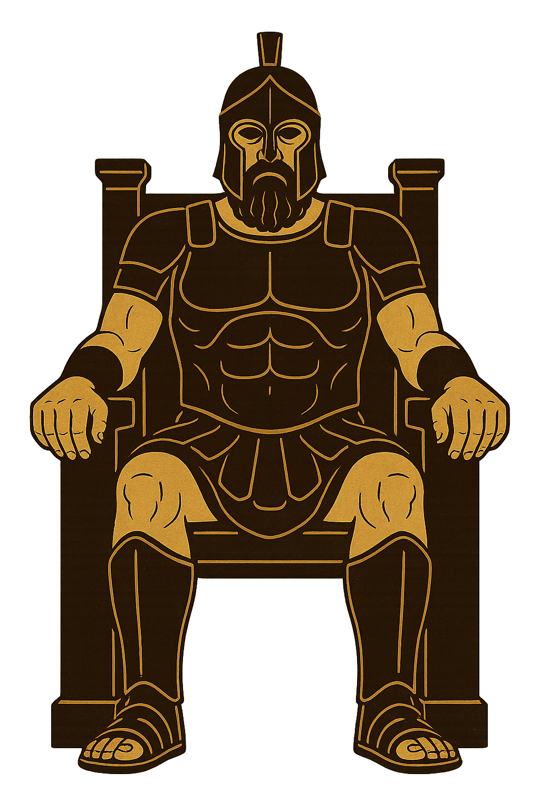

II · Bund Archivblatt 09
Der Phalantische Bund
Der Krathos-Bund · Phalantischer Staatsglaube
Krathos und seine sechs Gemahlinnen tragen die Ordnung der Polis. Der Staatsglaube Phalantias verbindet Tempel, Gesetz und Bürgerschaft und verweigert den Verstoßenen die Verehrung.

Gestalten dieser Überlieferung
Götterkreis & Gestalten
Die Namen, Bildnisse und Aspektzuordnungen dieser Glaubensrichtung. Verweise führen zu den entsprechenden Überlieferungen im Glaubenscodex.
„Krathos gab uns das Schwert. Die Gemahlinnen gaben uns den Grund, es zu führen.“
Phalantische Überlieferung
Der Göttervater
01Die Sechs Gemahlinnen · Der Celestiale Ehebund
06Phalantische Nebengötter
12Die Verstoßenen & der Usurpator
03Diese Spur verliert sich im Archiv.
Zu dieser Suche wurde kein Eintrag gefunden. Versucht einen anderen Namen oder öffnet wieder alle Kapitel.
Übersicht
Der Krathos-Bund ist der offizielle Staatsglaube Phalantias und seiner Nachbarvölker. Er entstand nicht durch eine einzelne Offenbarung oder einen Propheten – sondern durch Jahrhunderte des politischen und religiösen Ringens zwischen den Stadtstaaten der Region. Wo manche die Hohen Drei verehrten und andere der Celestischen Synode huldigten, kristallisierte sich mit der Zeit ein neuer, geeinter Glaube heraus: ein Pantheon, das die Strenge des Krieges mit der Wärme des Familienlebens verbindet.
Im Zentrum steht Krathos – der Göttervater, Patrongott des Krieges, der Ordnung und des Stadtstaates. Er ist kein ferner, abstrakter Gott – er ist der Vater der Polis , der Richter, der Feldherr. Die Phalantier beten zu ihm vor der Schlacht, bei der Urteilsfindung und beim Gründen einer neuen Stadt.
An seiner Seite stehen die Sechs Gemahlinnen – Göttinnen, die gemeinsam das gesamte Leben der Menschen abdecken: von der ersten Liebe bis zum letzten Atemzug. Der Glaube lehrt, dass Krathos ohne seine Gemahlinnen bloß Zerstörung wäre – und die Gemahlinnen ohne Krathos bloß Chaos. Erst im Celestialen Ehebund entsteht die Ordnung, die die Welt trägt.
Neben diesen Hauptgottheiten verehrt der Krathos-Bund eine Vielzahl von Nebengöttern , die spezifischere Bereiche des Lebens abdecken – von der Ernte bis zum Handelsweg, vom Seewind bis zur Gerichtsbarkeit kleiner Städte.
Den Feindbildern des Glaubens – Thyrane , Phantyne und Ophidron – wird keine Verehrung zuteil. Sie werden als Verworfene betrachtet – Kräfte, die die göttliche Ordnung untergraben wollen und deren Einfluss der gläubige Phalantier täglich widersteht.
Hintergrund
In den frühen Tagen Phalantias gab es keinen gemeinsamen Glauben – nur eine Landschaft voller konkurrierender Stadtstaaten, jeder mit seinem eigenen Tempel, seinen eigenen Riten, seinen eigenen Göttern. Manche huldigten den Hohen Drei , andere der Celestischen Synode . Religiöse Konflikte waren allgegenwärtig, Priester stritten mit Philosophen, Stadtstaaten führten Kriege im Namen verfeindeter Götter.
Die Wende kam nicht durch Offenbarung – sondern durch politische Not . Als die Stadtstaaten begannen, sich zusammenzuschließen, erkannten ihre Führer, dass ein gemeinsamer Glaube stärker bindet als jedes Vertragsdokument. Aus dem Ringen der Theologen und Strategen entstand der Krathos-Bund – ein Glaube, der das Beste beider Traditionen in sich vereinte.
Von den Hohen Drei übernahm man die klare Hierarchie, den Göttervater und die Idee einer kosmischen Familie. Von der Celestischen Synode übernahm man die Vielzahl der Götter, die Flexibilität im Umgang mit Nebengottheiten und die Vorstellung, dass das Göttliche in allen Bereichen des Lebens gegenwärtig ist. Das Ergebnis war ein Glaube, der sowohl den Krieger als auch den Handwerker , den Richter als auch die Mutter anspricht.
Der Zirkel des Ewigen Waldes der Klythesianer gilt den Phallantiern als Häresie – eine Fehlinterpretation des wahren Glaubens, die Krathos verzerrt, das Ehebund missachtet und das Patriarchat der göttlichen Ordnung umkehrt. Die Klythesianer wiederum sehen dies anders. Der Konflikt besteht fort.
Doktrin
Die Lehre des Krathos-Bundes ruht auf drei Säulen, die gemeinsam die Trias Poleos bilden:
I. Das Celestiale Ehebund – Die Welt ist geordnet, weil Krathos und seine Gemahlinnen in heiliger Verbindung stehen. Diese Verbindung ist kein bloßes Bild – sie ist das kosmische Gesetz . Krieg ohne Gnade (Khalyne) wird zur Grausamkeit. Wissen ohne Ordnung (Krathos) wird zur Tyrannei. Erst im Zusammenspiel aller sieben Gottheiten ergibt sich die vollständige Wahrheit.
II. Der Vater der Polis – Krathos ist nicht nur Kriegsgott. Er ist der Ursprung aller staatlichen Ordnung . Jede rechtmäßig gegründete Stadt ist ein Abbild seiner Schöpfung. Jeder Richter spricht in seinem Namen. Jeder Soldat trägt seinen Segen. Der Gläubige schuldet Krathos nicht nur Gebet – er schuldet ihm gelebte Ordnung.
III. Die Verworfenen – Thyrane, Phantyne und Ophidron sind keine Götter, denen man huldigt – sie sind Kräfte des Ungleichgewichts . Thyrane ist der blinde Zorn, der Recht in Rache verwandelt. Phantyne ist die Lüge, die das Ehebund vergiftet. Ophidron ist die Schlange – der Versuch, die Ordnung von unten zu zerfressen. Der Gläubige benennt sie, um sie zu erkennen – und meidet sie, um nicht zu fallen.
Anders als die Celestische Synode kennt der Krathos-Bund keine Grauzone zwischen Göttlichem und Infernalischem. Was außerhalb des Ehebundes steht, ist verworfene Kraft – nicht verehrt, nicht geduldet, nicht mit Opfergaben beschwichtigt. Dies ist der tiefste theologische Graben zwischen Phalantia und der Synode.
Die Götter im Detail
Krathos – Der Göttervater
Domänen: Krieg, Ordnung, Stadtstaaten, Recht
Krathos ist die rohe Macht , die Form annimmt. Er ist nicht die Zerstörung – er ist die geordnete Gewalt . Der Phalantier betet zu Krathos nicht, um zu töten – sondern um im Töten recht zu haben. Seine Symbole sind das Schwert , die Waage und die Stadtmauer . Er wird als mächtiger Patriarch dargestellt – nicht jung und schön, sondern alt, narbig und ungebrochen.
Krathos verließ nach der Legende seine ersten Gemahlinnen Thyrane und Phantyne, weil sie die Ordnung des Ehebundes brachen – Thyrane durch blinde Wut, Phantyne durch Verrat. Mit den verbleibenden sechs Gemahlinnen gründete er das Celestiale Ehebund neu. Dieser Mythos ist das Fundament des phalantischen Scheidungs- und Eherechts.
Khalyne – Gemahlin der Liebe
Domänen: Liebe, Gnade, Mitgefühl, Vergebung
Khalyne ist die erste und ranghöchste der Gemahlinnen – nicht weil sie mächtiger ist, sondern weil Krathos sie zuerst wählte. Sie ist die Vermittlerin zwischen dem Göttervater und den Menschen: wenn Krathos urteilt, bittet Khalyne um Gnade. Ihr Tempel steht in jeder phalantischen Stadt neben dem Gerichtshaus. Richter sind verpflichtet, vor jedem Urteil ihren Altar zu besuchen.
Hedone – Gemahlin der Kunst
Domänen: Lust, Schönheit, Kunst, Freude, Kreativität
Hedone verkörpert alles, was das Leben lebenswert macht – Musik, Fest, körperliche Freude und schöpferische Kraft. Sie ist keine Göttin der Ausschweifung – sondern der maßvollen Freude . Ihre Priester sind Künstler, Dichter und Festleiter. Kein phalantisches Stadtfest beginnt ohne ihr Gebet.
Logara – Gemahlin des Wissens
Domänen: Wissen, Bildung, Gesetz, Schrift, Gelehrsamkeit
Logara ist die Göttin, der die Grammatici dienen – die Schreiber-Priester, die Gesetze verfassen, Namen binden und Urteile niederschreiben. Sie ist eng verbunden mit der phalantischen Schrift . Die Legende besagt, dass Logara den ersten Grammaticus lehrte, Zeichen zu lesen wie Schicksale. Ihre Bibliotheken gelten als heilige Stätten.
Thyrne – Gemahlin der Natur
Domänen: Natur, Tiere, Jagd, Ernte, Wildnis
Thyrne ist die einzige der Gemahlinnen, die selten in Städten verehrt wird – ihre Tempel stehen am Waldrand, an Quellen, auf Bergen. Sie ist die Wilde im Ehebund – die einzige Kraft, die Krathos nie vollständig zähmen konnte und es auch nicht wollte. Jäger, Bauern und Hirten sind ihre Hauptgläubigen. Ihr Symbol ist der Bogen und die Eiche .
Ponara – Gemahlin des Handwerks
Domänen: Handwerk, Arbeit, Schmiedekunst, Bauwesen, Fleiß
Ponara ist die Göttin der schaffenden Hände . Sie wird von Schmieden, Baumeistern, Töpfern und Webern verehrt. Jedes Werkstück von Bedeutung – ein Schwert, ein Tempel, eine Brücke – wird mit ihrem Zeichen gesegnet. Die Phalantier glauben: Was Krathos befiehlt, baut Ponara. Sie ist damit untrennbar mit dem Aufbau der Polis verbunden.
Zoane – Gemahlin des Lebens und Todes
Domänen: Leben, Tod, Wiedergeburt, Seelen, Übergang
Zoane ist die ruhigste und zugleich mächtigste der Gemahlinnen. Sie spricht selten – aber wenn sie spricht, hört selbst Krathos zu. Sie empfängt die Seelen der Gefallenen und entscheidet, ob sie ruhen oder wiederkehren. Kein Bestattungsritual in Phalantia findet ohne ihre Priester statt. Ihr Symbol ist die Waage mit zwei leeren Schalen – Leben und Tod im Gleichgewicht.
Feindbilder
Thyrane – Die Zorneswitwe
Domänen: Rache, Niedertracht, blinder Zorn, Bitterkeit
Thyrane war einst Gemahlin des Krathos – so lehrt es die Überlieferung. Doch ihr Zorn kannte keine Grenze und keine Vernunft. Sie rächt nicht aus Gerechtigkeit – sie rächt aus Schmerz . Als Krathos sie verstieß, schwor sie ewige Vergeltung. Seitdem steht sie für alle, die Rache über Recht stellen, die Niedertracht über Würde. Die Phalantier benennen sie beim Namen – als Warnung, nicht als Gebet.
Phantyne – Die Trugbildweberin
Domänen: Täuschung, Intrige, Zwiespalt, Verrat, falscher Schein
Phantyne war die klügste der früheren Gemahlinnen – und die gefährlichste. Sie log nicht plump: sie webte Wahrheiten, die wie Lügen wirkten, und Lügen, die wie Wahrheiten klangen . Krathos verstieß sie, als ihr Verrat das Ehebund zu zerreißen drohte. Seitdem flüstert sie in Gerichtssälen, Schlafzimmern und Rathäusern. Ihr Symbol ist der Spiegel mit gebrochenem Rahmen .
Ophidron – Die Schlange
Domänen: Usurpation, Chaos, dämonische Gegenmacht, Verführung zur Unordnung
Ophidron ist kein verstoßener Gefährte – er war nie Teil des Ehebundes . Er ist der dämonische Gegenpol zu Krathos: wo Krathos Ordnung schafft, schafft Ophidron Zerfall. Seine Form ist die Schlange – das Wesen, das kriecht statt zu marschieren, das von unten kommt statt von oben regiert. Er verführt nicht durch Gewalt, sondern durch das Versprechen, dass Ordnung Lüge ist . Seine Anhänger sind Verräter, Aufrührer und jene, die die Polis von innen zersetzen.
Unterschiede zu anderen Glaubensrichtungen
Gegenüber der Celestischen Synode
Die Celestische Synode kennt keine klare Trennung zwischen Göttlichem und Infernalischem – Nebengötter beider Art werden gleichwertig verehrt oder zumindest geduldet. Der Krathos-Bund lehnt dies entschieden ab. Die Verworfenen – Thyrane, Phantyne, Ophidron – werden nicht beschwichtigt, nicht mit Opfern bedacht, nicht in Tempeln geduldet . Wer im Krathos-Bund einen der Verworfenen verehrt, begeht Apostasie. Diese Grenze ist unverhandelbar.
Gegenüber den Hohen Drei
Die Hohen Drei verdichten das göttliche Spektrum auf drei Hauptgottheiten – der Krathos-Bund öffnet es auf sieben Hauptgötter plus Nebengötter. Dies gilt den Phallantiern als Vervollständigung, nicht als Verwässerung. Der Göttervater Krathos trägt deutliche Züge des Osiran der Hohen Drei – doch er ist kriegerischer, patriarchaler, staatsnäher. Die Gemahlinnen verteilen Aufgaben, die bei den Hohen Drei auf drei Götter komprimiert waren.
Gegenüber dem Zirkel des Ewigen Waldes
Der Zirkel des Ewigen Waldes gilt den Phallantiern als Häresie . Die Umkehrung des patriarchalen Ehebundes, die Verehrung matriarchaler Gottheiten als Hauptgötter und die Feindbildpraxis gegen männliche Gottheiten widerspricht der phalantischen Lehre fundamental. Dennoch vermeiden die Phalantier offene Kreuzzüge – man betrachtet die Klythesianer als Irrgeleitete , nicht als erklärte Feinde des Glaubens.
Verschiedenes
- Die Zahl 7 gilt im Krathos-Bund als heilig – sieben Hauptgötter, sieben Säulen der Polis, sieben Gelübde beim Eintritt in den Priesterdienst.
- Der Name Ophidron darf in keinem Tempel laut ausgesprochen werden. Priester verwenden stattdessen den Umschreibung „Der Kriecher“ oder „Der Namenlose unter den Steinen“ .
Ein Wesen, viele Namen
Namen & Beinamen
- Weiterer Name
- Krathos-Bund
Im selben Glaubensgeflecht